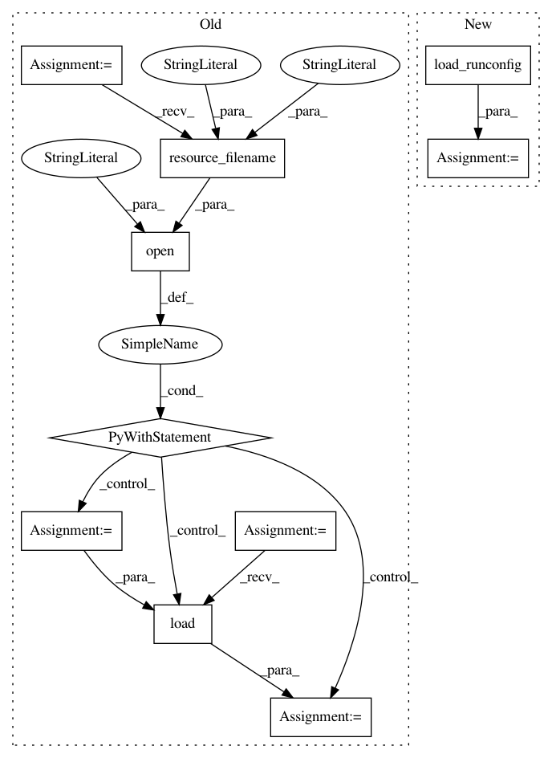

55a0700a659abde74acd0972922ef563c30e8e2c,pynets/plotting/plot_graphs.py,,plot_conn_mat,#Any#Any#Any#Any#Any#Any#,17
Before Change
conn_matrix_plt = np.nan_to_num(np.multiply(conn_matrix, conn_matrix_bin))
try:
with open(
pkg_resources.resource_filename("pynets", "runconfig.yaml"), "r"
) as stream:
hardcoded_params = yaml.load(stream)
try:
labeling_atlas = \
hardcoded_params["plotting"]["labeling_atlas"][0]
except KeyError as e:
print(e,
"Plotting configuration not successfully extracted"
" from runconfig.yaml"
)
sys.exit(1)
stream.close()
labels = [i[0][labeling_atlas] for i in labels]
except BaseException:
pass
After Change
conn_matrix_bin = thresholding.binarize(conn_matrix)
conn_matrix_plt = np.nan_to_num(np.multiply(conn_matrix, conn_matrix_bin))
hardcoded_params = load_runconfig()
try:
labeling_atlas = hardcoded_params["plotting"]["labeling_atlas"][0]
except KeyError as e:
print(e,
In pattern: SUPERPATTERN
Frequency: 4
Non-data size: 10
Instances
Project Name: dPys/PyNets
Commit Name: 55a0700a659abde74acd0972922ef563c30e8e2c
Time: 2020-10-26
Author: dpisner@utexas.edu
File Name: pynets/plotting/plot_graphs.py
Class Name:
Method Name: plot_conn_mat
Project Name: dPys/PyNets
Commit Name: 55a0700a659abde74acd0972922ef563c30e8e2c
Time: 2020-10-26
Author: dpisner@utexas.edu
File Name: pynets/plotting/plot_graphs.py
Class Name:
Method Name: plot_conn_mat_struct
Project Name: dPys/PyNets
Commit Name: 55a0700a659abde74acd0972922ef563c30e8e2c
Time: 2020-10-26
Author: dpisner@utexas.edu
File Name: pynets/plotting/plot_graphs.py
Class Name:
Method Name: plot_conn_mat_func
Project Name: dPys/PyNets
Commit Name: 55a0700a659abde74acd0972922ef563c30e8e2c
Time: 2020-10-26
Author: dpisner@utexas.edu
File Name: pynets/plotting/plot_graphs.py
Class Name:
Method Name: plot_community_conn_mat